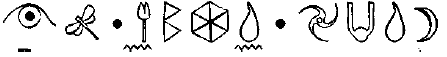
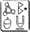

EN FIN, KNIGHTSBRIDGE
KAHYA’nın bombasından çıkan ses patlaması mutfak kapısını kırmış, paslanmaz çelik aletleri bir saman yığını gibi etrafa saçmıştı. Akvaryum kırılmış, yerler su, pleksiglas ve şaşkın ıstakozlarla kaplanmıştı. Pençeleri kalkmış bir şekilde enkazın arasında kayar gibi ilerliyorlardı.
Lokanta personeli yerdeydi,, bağlı, sırılsıklam ama hayattaydılar. Kâhya onları çözmemişti. Şu anda curcuna istemiyordu. Bütün tehditler etkisiz hale getirildiğinde onlarla uğraşacak zaman olacaktı.
Bir tetikçi kımıldandı, bir bölme duvarının yarısından aşağı sarkıyordu. Kâhya gözlerini kontrol etti. Şaşıydılar ve odaklanamıyorlardı. Burada tehlike yoktu. Kâhya aynı şekilde yaşlı kadının silahını cebine koydu. Çok çok dikkatli de olamazdınız; tekrar baştan bir şeyler öğreniyordu. Eğer Madam Ko bu öğlenki gösteriyi görmüş olsaydı, kesinlikle mezuniyet dövmesini lazerle sildirirdi.
Oda güvenliydi ama korumayı hâlâ rahatsız eden bir şey vardı. Asker hisleri iki kırık kemik gibi gıcırdıyordu. Kâhya bir kez daha Akademi’deki senseisi Madam Ko’yu gözünde canlandırdı. Korumanın ilk görevi şefi korumaktır. Eğer önünde duruyorsanız şef-vurulamazdı. Madam Ko her zaman işverenlerden şefler olarak bahsederdi. Kimsenin şeflerle ilgilenmemesi gerekirdi.
Kâhya niçin özellikle bu özdeyişi hatırladığını merak etti. Kafatasında dolaşan yüzlerce Madam Ko lafları arasında niçin bu aklına gelmişti? Gerçek açıkça ortadaydı. Kişisel korumanın birinci kuralını bozup şefini korumasız bırakmıştı. İkinci kural: Şefinle duygusal bağ kurma da oldukça paramparça olmuştu. Kâhya, Artemis’e o kadar bağlanmıştı ki bu açıkça kararlarını etkilemeye başlamıştı.
Madam Ko’yu önünde görebiliyordu; sıradan haki elbisesi içinde herkese bir Japon ev hamımı gibi geliyordu. Ama hangi ulustan olursa olsun kaç tane ev hanımı havada ıslık sesi çıkaracak kadar hızlı vurabilirdi? Sen bir yüz karasının, Kâhya. Ad inin bir yüz karası. Bu yeteneklerle ayakkabı tamirciliği yapsan daha iyi. Şefin çoktan etkisiz hale getirildi.
Kâhya bir rüyadaymış gibi harekete geçti. Mutfağın kapısına doğru bütün hızıyla koşarken havanın kendisi onu tutuyormuş gibiydi. Ne olacağını biliyordu. Pervasız Arno bir profesyoneldi. Belki kibirliydi -ki bu korumalar arasında çok önemli bir günahtı- ama yine de bir profesyoneldi. Eğer silahlı çatışma tehlikesi varsa profesyoneller her zaman kulaklık takarlardı.
Ayaklarının altındaki karolar kaygandı ama Kâhya öne eğilip kauçuk tabanlı ayakkabılarının uçlarını yüzeye sürterek durumu idare etti. Zarar görmemiş kulak zarları lokantadan sıra dışı titreşimler aldı. Bir konuşma. Artemis birisiyle konuşuyordu. Hiç şüphesiz bu Pervasız Arno’ydu. Artık çok geçti.
Kâhya yarışçıları utandıracak bir hızla servis kapısından çıktı. Beyni retinasından gelen anlık resimlerin olasılıklarını hesaplamaya başladı. Pervasız ateş ediyordu. Şu anda yapılacak hiçbir şey yoktu. Sadece bir şans vardı. Kâhya hiç duraksamadan onu yaptı.
Pervasız sağ elinde susturuculu bir tabanca tutuyordu.
“Once sen,” dedi. “Sonra a o mamun.”
Pervasız Arno horozu kaldırdı, çabucak nişan aldı ve ateş etti.
Kâhya birdenbire ortada belirdi. Sanki bütün salonu doldurmuş, kendisini merminin yoluna atmıştı. Uzaktan, kurşun geçirmez ceketindeki kevlar* işe yarayabilirdi ama burnunun dibinden, Teflon kaplı mermi karı delen kızgın bir maşa gibi yeleği delip geçti.
* kevlar: kurşun geçirmez yelek yapımında, trambolinlerde, tenis raketlerinde kullanılan bir madde.
Kâhya’nın göğsüne kalbinin bir santim altından girdi. Bu ölümcül bir yaraydı. Ve bu kez yakında peri büyüsüyle onu kurtaracak Yüzbaşı Short yoktu.
Korumanın kendi hızıyla birleşen merminin gücü Kâhya’yı Artemis’e çarptırıp onu tatlı masasına yapıştırdı. Çocuktan ortada gözüken hiçbir şey yoktu, bir Armani mokasen hariç.
Kâhya’nın nefes alıp verişi yavaşladı ve gözleri karardı ama henüz ölmemiş ti. Beyninin elektriği hızla bitiyordu ama koruma tek bir düşünceye tutunuyordu: şefini koru.
Pervasız Arno şaşkın bir şekilde soludu ve Kâhya o sese doğru altı kez ateş etti. Görebilseydi dağılımdan dolayı hayal kırıklığına uğrayabilirdi. Ama mermilerden biri yerini bulup Pervasız’ı şakağından vurdu. Baygınlık hemen geldi, beyin sarsıntısı kaçınılmazdı. Pervasız Arno yerde grubun geri kalanına katıldı.
Kâhya vücudunu dev bir yumruk gibi sıkan acıyı umursamadı. Onun yerine hareketleri dinledi. Yakında hiçbir şey yoktu; ıstakozların karoların üzerindeki tıkırtısı hariç. Eğer ıstakozlardan biri saldıracak olursa Artemis tek başına kalmıştı.
Daha fazla bir şey yapılamazdı. Ne o, ne de Artemis güvendeydi. Kâhya anlaşma koşullarını yerine getirebilecek durumda değildi. Artık sorumluluk yoktu. Her halükarda birkaç saniyeden fazla olmayan bir yaşamı kalmıştı sadece. Zaten Artemis sadece bir şef değildi. O, korumanın yaşamının bir parçasıydı. Tek gerçek dostuydu. Madam Ko bu tavırdan hoşlanmayabilirdi ama artık bu konuda yapabileceği fazla bir şey yoktu. Hiç kimsenin yapabileceği bir şey yoktu.
Artemis tatlıdan hiç hoşlanmazdı. Ama şu anda kendini ekler, peynirli kekler ve pastalar içinde dalmış buldu. Takım elbisesi kesinlikle rezil olmuştu. Tabii ki Artemis’in beyni bu olayları hemen yaratıyordu çünkü böylece olanları düşünmekten kaçınabilirdi. Ama doksan kiloluk ölü ağırlığı önemsememek çok zordu.
Neyse ki Kâhya’nın çarpması Artemis’i servis arabasının ikinci rafına sokarken, koruma üsteki dondurma bölümünde kalmıştı. Artemis’in görebildiği kadarıyla, meyveli Siyah Orman pastası ciddi iç yaralanmaları yeterli seviyede engelleyecek kadar çarpışmayı yumuşatmıştı. Ama yine de bir ayak bakım uzmanının çağrılması gerektiğine hiç şüphe yoktu. Büyük ihtimalle, bir trollün bünyesine sahip olsa da Kâhya’nın da buna ihtiyacı olacaktı.
Artemis korumasının altından çıkmak için uğraştı. Her hareketinde kötü dondurma külahları ona doğru patlıyorlardı.
“Gerçekten, Kâhya,” diye homurdandı genç çocuk. “İş arkadaşlarımı çok daha dikkatli seçmeye başlamalıyım. Kurbanları olduğumuz komploların olmadığı bir gün neredeyse geçmiyor.”
Artemis lokantanın zemininde yatan Pervasız Arno’yu görünce rahatladı.
“Bir kötü adamın işi daha bitti. İyi atıştı, Kâhya, her zamanki gibi. Bir şey daha, bundan sonraki toplantılarda kurşun geçirmez yelek giymeye karar verdim. Bu işini biraz daha kolaylaştıracak, değil mi?”
İşte o anda Artemis, Kâhya’nın gömleğini fark etti. Görüntü göğsündeki havayı görünmez bir tokmakla vurulmuş gibi boşalttı. Bunun nedeni kumaştaki delik değil, içinden akan kandı.
“Kâhya, yaralanmışsın. Mermi. Ama ya kevlar?”
Koruma ne karşılık verdi, ne de vermesi gerekiyordu. Artemis bilim konusunda çoğu nükleer fizikçiden daha fazla bilgi sahibiydi. Doğrusunu söylemek gerekirse, internette Şövalye Emmsey takma adıyla sık sık dersler verirdi. Merminin momentinin ceketin dayanamayacağı kadar büyük olduğu ortadaydı. Daha rahat içeri girebilmesi için büyük ihtimalle teflon sarılmıştı.
Artemis’in büyük bir bölümü korumasının boynuna sarılmak ve kardeşiymiş gibi ağlamak istiyordu. Ama Artemis bu içgüdüyü bastırdı. Şu çabuk düşünmesi gerekiyordu.
Kâhya, Artemis’in düşüncelerini böldü.
“Artemis... sen misin?” dedi, kelimeler kısa nefesler arasından geliyordu.
“Evet, benim,” diye karşılık verdi Artemis, sesi titriyordu.
“Merak etme. Juliet seni koruyacaktır. Rahat olacaksın.”
“Konuşma, Kâhya. Kımıldamadan yat. Yaran ciddi.”
Kâhya öksürdü. Gülmeye yakın çıkarabildiği tek ses buydu.
“Tamam, ciddi. Ama ben bir şey düşüneceğim. Sen öylece kımıldamadan dur.”
Son kalan gücüyle Kâhya elini kaldırdı.
“Elveda, Artemis,” dedi. “Dostum.”
Artemis eli yakaladı. Gözyaşları boşanıyordu. Kontrolünü kaybetmişti.
“Elveda, Kâhya.”
Avrasyalının boş bakan gözleri sakindi. “Artemis bana... Domovoi de.”
Bu isim Artemis’e iki şey söyledi. Birincisi, hayat boyu dostu adını Slavik bir koruyucu yaratıktan almıştı, ikincisi, Madam Ko’nun Akademisinden mezun olanlara asla ilk isimlerini şeflerine söylememeleri talimatı verilmişti. Bu işlerin mesafeli olmasını sağlardı. Kâhya bu kuralı asla bozmazdı... yeteri artık bir önemi yoksa.
“Elveda, Domovoi,” diye hıçkırdı çocuk. “Elveda, dostum.”
El düştü, Kâhya ölmüştü.
“Hayır!” diye bağırdı Artemis, geriye doğru sendeliyerek.
Bu doğru değildi. Olayların böyle sonuçlanması gerekmiyordu. Bir nedenden dolayı, her zaman beraberce öleceklerini hayal etmişti; ilginç-bir yerde başa çıkılmaz olasılıklarla karşılaşarak. Yeniden faaliyete geçen Vezüv’ün kenarında ya da Ganj Nehrinin kıyısında. Ama beraberce, dost olarak. Bütün yaşadıklarından sonra,
Kâhya gösteri yapan, ikici sınıf bir vücutçunun karşısında basit bir şekilde yenilemezdi.
Kâhya daha önce de neredeyse ölmüştü. Bir yıl önce, Haven Şehrinin altındaki tüneldeki bir troll tarafından parçalanarak. O zaman peri büyüsünü kullanan Holly Short tarafından kurtarılmıştı. Ama şimdi etrafta korumayı kurtaracak bir peri yoktu. Burada zaman düşmandı. Eğer Artemis’in daha fazla zamanı olsaydı, LEP’le bağlantı kurmak için bir yol bulur ve Holly’yi büyüsünü bir kez daha kullanmaya ikna edebilirdi. Ama zaman bitmek üzereydi. Beyni tamamen durmadan önce Kâhya’nın belki dört dakikası daha vardı. Artemis gibi bir deha için bile uzun bir süre değildi bu; daha zaman kazanması gerekiyordu. Ya da çalması.
Düşün, oğlum, düşün. Koşulların sağladıklarını kullan. Artemis gözyaşı selini kesti. Bir lokantadaydı, bir balık lokantasında. Bir işe yaramazdı! Beş para etmezdi! Belki tıbbi bir tesiste bir şey yapabilirdi. Ama burada? Burada ne vardı? Bir fırın, lavabolar, mutfak aletleri. Yeterli aletler olsa bile, tıbbi eğitimini henüz tamamlamamıştı. Bir ameliyat için çok geçti; dört dakikadan çabuk yapılan bir kalp ameliyatı metodu olmadığı sürece.
Saniyeler tıklayarak geçiyordu. Artemis git gide kendine kızmaya başlamıştı. Zaman onların karşısındaydı. Zamanın durdurulması gerekiyordu. Bir fikir Artemis’in beyninde bir nöron parlaması olarak belirdi. Belki zamanı durduramazdı ama Kâhya’nın onun içindeki akışını durdurabilirdi. Yöntem riskliydi, kesinlikle ama ellerindeki tek şans buydu.
Artemis tatlı masasının frenini ayağıyla açtı ve zımbırtıyı mutfağa doğru çekmeye başladı. Aracın yolundaki inleyen tetikçileri çekmek için birkaç kez durmak zorunda kaldı.
Acil durum araçları, Knightsbridge’den doğru yaklaşıyorlardı. Ses bombası patlamasının dikkatlerini çektiği ortadaydı. Otoritelere olası bir öykü uydurabilmek için sadece dakikaları vardı... Kâhya’nın orada olmaması gerekiyordu... lokantada düzinelerce müşteri olduğu için parmak izleri sorun olmazdı. Tek yapması gereken Londra’nın aynasızları gelmeden buradan çıkıp gitmekti.
Mutfak paslanmaz çelikten yapılmıştı. Metal raflar, külahlar ve çalışma alanları ses bombasından yayılanlarla darmadağındı. Lavabolarda balıklar çırpmıyor, kabuklu deniz yaratıkları yerde takırtılar çıkarıyor ve tavandan havyarlar damlıyordu.
İşte! Arkadaki, dondurucular, bir deniz ürünleri lokantasına en gerekli şeylerdi. Artemis yemek arabasını omuzlayıp mutfağın arkasına doğru itti.
Dondurucuların en genişi, çoğunlukla büyük lokantalarda bulunan özel yapım, çekilen türdendi. Artemis gözü hızla çekip buzlarla kaplı somon, deniz levreği ve mezgitleri çabucak çıkarmaya başladı.
Cryogenic. Bu onların tek şansıydı. Onu iyileştirecek ilaç yapılana kadar bir vücudu dondurma bilimi. Genelde tıp toplumu tarafından bir kenara bırakılmıştı, bununla birlikte paralarını bir yaşamdan daha fazla zamanda harcamak isteyen eksantrik zenginlerden her yıl milyonlar kazanıyorlardı. Cryogenic odaları genelde çok belirgin özelliklerle yapılırdı ama Artemis’in şu an her zamanki standartlar için zamanı yoktu. Bu dondurucu geçici bir çözüm olacaktı, Kâhya’nın beyin hücrelerini korumak için kafanın soğutulması zorunluydu. Beyin fonksiyonları bozulmadığı sürece, kalp atışı olmasa bile teorik olarak hayata döndürülebilirdi.
Artemis açık dondurucunun üzerine gelecek şekilde masayı döndürdü; sonra, gümüş bir tepsinin yardımıyla Kâhya’nın vücudunu üzerinden dumanlar tüten buza indirdi. Göz dardı ama koruma bacakları kıvrılarak içine yerleşmişti. Artemis ölü dostunun üzerine boştaki buzları yığdı ve sonra dokulara zarar gelmemesi için termostatı eksi dörde ayarladı. Buz tabakasının üzerinde sadece Kâhya’nın ifadesiz yüzü görünüyordu.
“Geri geleceğim,” dedi çocuk. “İyi uykular.”
Sirenler artık yaklaşmıştı. Artemis lastiklerden gelen ani fren sesini duydu.
“Dayan, Domovoi,” diye fısıldadı Artemis, dondurucunun gözünü kapatırken.
Artemis arka kapıdan çıkıp izleyici ve çevre halkının arasına karıştı. Polis kalabalığın fotoğrafını çektirebilirdi, bu yüzden ne polis kordona takıldı, ne de dönüp lokantaya baktı. Onun yerine Harrods’a gitti ve kendine galeri kafesinde bir masa buldu.
Annesini aramadığı konusunda garson kızı ikna ettiğinde ve kendi Earl Grey çayını ödeyebilecek kadar nakit parayı gösterdiğinde, Artemis cep telefonunu çıkarıp hızlı ara menüsünden bir numara seçti.
İkinci çalışta bir adam cevap verdi.
“Merhaba. Her kim isen çabuk ol. Şu anda çok meşgulüm.”
Bu adam, Yeni Scotland Yard’dan dedektif Justin Barre’ydi. Barre’nin sesindeki kulak tırmalayıcı ton doksanlardaki bir bar kavgasında gırtlağını kesen bir avcı bıçağından kaynaklanıyordu. Eğer Kâhya’nın eli kanamayı durdurmamış olsaydı, Justin Barre Çavuşluğun ötesine yükselemeyecekti. Borcunu ödeme zamanı gelmişti.
“Dedektif Barre. Ben Artemis Fowl.”
“Artemis, nasılsın? Ve benim eski ortağım Kâhya nasıl?”
Artemis alnını ovaladı. “Korkarım, hiç de iyi değil. Bir iyiliğe ihtiyacı var.”
“Koca adam için ne gerekiyorsa. Ne yapabilirim?”
“Knightsbridge’deki kargaşa hakkında bir şey duydun mu?”
Telefonda bir duraksama oldu. Artemis fakstan yırtılan bir kâğıt sesi duydu.
“Evet, şimdi geldi. Bir lokantanın birkaç camı kırılmış. Önemli bir şey yok. Bazı turistler olaydan dolayı şok geçirmiş. İlk raporlar bunun yerel bir deprem olduğunu söylüyorlar; buna inanabilirsen. Orada şimdilik iki arabamız var. Bu işin arkasında Kâhya var deme?”
Artemis nefesini tuttu. “Adamlarını donduruculardan uzak tutmanı istiyorum.”
“Bu tuhaf bir istek, Artemis. Dondurucularda görmemem gereken ne var?”
“Yasal olmayan bir şey yok,” diye ona söz verdi Artemis. “Bunun Kâhya için ölüm kalım meselesi olduğunu söylüyorsam bana inan.”
Barre tereddüt etmedi. “Bu tam olarak benim yetkimde değil ama olmuş bil. Dondurucularda görmemiş olmam gereken şeyi ne ise onu alman gerekiyor mu?” Memur zihnini okumuştu. “Mümkün olduğu kadar çabuk. Bana gereken sadece iki dakika.”
Barre bunu düşündü. “Tamam. Şimdi zamanlama yapalım. Adli ekip orada birkaç saat kalacaktır. Bu konuda hiçbir şey. yapamam. Ama tam altı buçukta, orada görevli hiç kimse olmayacağını garanti edebilirim. Beş dakikan olacak.”
“Bu gereğinden de fazla.”
“İyi. Koca adama ödeştiğimizi söyle.”
Artemis sesini kontrol etti. “Peki, Dedektif. Ona söyleyeceğim.”
Eğer fırsatını bulursam, diye düşündü.
BUZ ÇAĞI CRYOGENİC ENSTİTÜSÜ, HARLEY CADDESİ, LONDRA
Buz Çağı Cryogenic Enstitüsü aslında Londra’nın Harley Caddesinde değildi. Teknik olarak, meşhur tıbbi bulvarın güney ucundaki bir arka sokak olan Dickens Lane’e sokuşturulmuştu. Ama bu, Müdür, Doktor Constance Lane’in bütün Buz Çağının taşınmazlarını Harley Caddesine koymasını engelleyememişti. Böyle bir güvenirliği para verip alamazdınız. Yukarı sınıf bu büyülü kelimeleri iş kartınızda gördüğünde koşa koşa dondurulmaya gelirdi.
Artemis Fowl o kadar kolay etkilenmezdi. Ama yine de pek fazla tercihi yoktu; Buz Çağı şehirdeki üç cryogenic merkezden biriydi. Ve de içinde boş birimler olan tek yerdi. Ama neon tabela Artemis’in ilgisini biraz çekmişti: “Kiralık Bölmeler”. Gerçekten öyleydi.
Binanın kendisi Artemis’in ürpermesine yeterli oluyordu. Ön cephesi fırçalanmış gibi çizgi çizgi alüminyumdan yapılmıştı; bir uzak gemisini hatırlatmak için dizayn edildiği açıktı ve kapılar Uz ay Yolu tarzında vınlayarak açılıyordu. Kültür nerede kalmıştı? Sanat nerede kalmıştı? Böyle korkunç bir canavarlık tarihi Londra’da yapılma iznini nasıl almıştı?
Üniforması ve üç köşeli başlığıyla bir hemşire, resepsiyonda duruyordu. Artemis onun gerçek hemşire olmadığını tahmin etti; yapma tırnaklarının arasındaki sigaradan dolayı.
“Afedersiniz, bayan?”
Hemşire bir dedikodu dergisinden gözünü hafifçe kaldırdı.
“Evet? Birisini mi arıyorsun?”
Artemis yumruklarını arkasında sıktı.
“Evet, Doktor Lane’yi görmek istiyorum. Operatör o, değil mi?”
Hemşire sigarasını aşırı dolu kül tablasına bastırarak söndürdü.
“Bu bir okul ödevi değil, değil mi? Doktor Lane ödev istemiyor.”
“Hayır. Okul ödevi değil.”
“Sen avukat değilsin, değil mi?” diye şüphelice sordu hemşire. “Çocuk bezindeyken mezun olan dahilerden biri?”
Artemis iç çekti. “Bir dahi evet. Bir avukat hiç değilim. Ben, mademoiselle, bir müşteriyim.”
Ve birden hemşire bir şirinlik abidesi oldu..
“Ah, bir müşteri, niçin öyle olduğunu söylemediniz. Hemen sizi içeri alacağım. Kahve, çay ya da daha sıkı bir şey ister misiniz, bayım?”
“Ben on üç yaşındayım, mademoiselle.”
“Meyve suyu?”
“Çay iyi olur. Eğer varsa Earl Grey. Tabii ki şekersiz, beni hiperaktif yapıyor.”
Hemşire parasını ödeyen bir müşterinin alay etmesini kabul etmeye oldukça hazırlıklıydı ve Artemis’i salona götürdü; buranın stili yine uzay çağma uygundu. Bol bol parlak velur kumaş ve sonsuz sayıda ayna.
Artemis kesinlikle Earl Gray olmayan bir bardak bir şeyin yarısını bitirmişti ki Doktor Lane’in kapısı açıldı.
“İçeri gelin,” dedi bir kadın, kuşkuluca.
“Yürüyerek mi geleyim?” diye sordu Artemis. “Yoksa beni oraya ışınlayacak mısınız?”
Büronun duvarları kaim çizgiler halinde panolara bölünmüştü. Bir kenarda doktorun diploma ve sertifikaları vardı. Artemis bu sertifikaların çoğunun bir hafta sonunda alınabileceğini tahmin etti. Duvar boyunca birkaç fotoğrafik portre vardı. Bütün bunların üstünde meşhur “Love Lies Sleepin*” yazılıydı. Artemis o an neredeyse çıkıp gidecekti ama umutsuz bir durumdaydı.
*Love Lies Sleeping: Sevgilim Uyuyor, Elizabeth Bishop’un bir şiiri.
Doktor Lane masanın arkasında oturuyordu. Uzun, dalgalı kızıl saçları ve bir sanatçının ince uzun parmaklarıyla çok çekici bir kadındı. Önlüğü Dior’dandı. Constance Line’ın gülümsemesi bile mükemmeldi; hem de fazla mükemmel. Artemis yakından bakınca bütün yüzün plastik cerrahi eseri olduğunu fark etti. Göründüğü kadarıyla bu kadının bütün hayatı zamanı aldatmakla geçiyordu. Doğru yere gelmişti.
“Evet, genç adam, Tracy müşteri olmak istediğinizi söyledi?” Doktor gülümsemeye çalıştı ama gerilme yüzünün bir balon gibi parlamasına neden oldu.
“Kişisel olarak, hayır,” diye karşılık verdi Artemis “Ünitelerinizden birini kiralamak istiyorum. Kısa bir süre için.”
Constance Lane çekmecesinden bir şirket broşürü çıkardı; bazı bölümler kırmızıyla çerçevelenmişti.
“Fiyatlarımız oldukça fahiştir.”
Artemis rakamlara bakmadı bile.
“Sorun para değil. İsviçre’deki bankamdan telefonla hemen transfer yapabiliriz. Beş dakika içinde kişisel hesabınızda yüz bin sterlininiz olabilir. Tek ihtiyacım olan tek bir gecelik bir ünite.”
Karşısındaki kişi etkileyiciydi. Constance bu paranın alabileceği her şeyi düşündü. Ama hâlâ isteksizdi...
“Genelde erişkin olmayanların akrabalarını odalarımıza yollamasına izin verilmez. Doğrusu yasalara göre böyle.”
Artemis ileri doğru eğildi.
“Doktor Lane. Constance. Burada yaptığım şey tam olarak yasal değil ama hiç kimsenin canı da yanmayacak. Bir gece ve zengin bir kadın olacaksınız. Yarın bu saatte burada hiç olmamış olacağım. Ceset yok, şikayet yok.”
Doktorun eli çenesine gitti.
“Bir gece mi?”
“Sadece bir gece. Burada olduğumuzu bilmeyeceksiniz bile.”
Constance çekmecesinden bir el aynası çıkarıp yansımasını dikkatlice inceledi.
“Bankanı ara,” dedi.
STONEHENGE, WILTSHIRE
İki LEP mekiği Güney İngiltere’de ortaya çıktı. Biri Londra’da ama Chelsea Futbol Kulübü sahalarını mekik limanının beş yüz metre üstüne inşa ettiğinden dolayı halka yakındı.
Diğer liman Wiltshire’da, insanların Stonehenge dediği yerin yanındaydı. Çamur Adamların bu yapının kökeni konusunda birçok teorisi vardı. Bunlar, uzay gemilerinin iniş alanından pagan ibadet merkezine değişiyorlardı. Gerçek çok daha az çekiciydi. Stonehenge aslında bir düz-ekmek tabanlı yemek yerinin çıkışıydı. Ya da insan deyişiyle pizzacıydı.
Bog adındaki bir gnome, yukarıdaki gezinti yerlerinde ne kadar çok turistin sandviçlerini unuttuğunu fark etmişti ve böylece terminalin hemen yanında dükkân açmıştı. Bu güzel bir işletmeydi. Pencerelerden birini açıp üstüne ne istediğinizi söylerdiniz ve on dakika sonra yüzünüze yerdiniz. Tabii ki Bog insanlar tam cümle kurarak konuşmaya başladıklarında yeraltındaki işini değiştirmişti. Zaten yerlerdeki peynirler etrafı vıcık vıcık yapıyordu. Birkaç servis penceresi yıkılmıştı bile.
Peri halkının sivilleri için Stonehenge’i ziyaret etmek için vize almak yüzeydeki sürekli aktivitelerden dolayı zordu. Ama yine de hippiler her gün perileri görüyorlardı ve asla ilk sayfa haberi olmamışlardı. Bir polis memuru olarak Holly’nin vize sorunu yoktu; Recon rozetinin ucunu göstermesi yüzeye çıkan bir yolu hemen açardı.
Ama Recon memuru olmak magma patlaması yoksa bir işe yaramazdı. Ve Stonehenge mekiği üç yüz yıldan
fazladır çalışmıyordu. Tek bir kıvılcım bile yoktu. Sürecek tren olmayınca Holly ticari bir mekikle yolculuk etmek zorunda kalmıştı.
İlk gelecek mekik tamamen rezerve edilmişti ama son anda gelen bir iptalden dolayı Holly bir yolcuyu atmak zorunda kalmamıştı.
Mekik elli koltukluk lüks bir kruvazördü. Özellikle Bog Kardeşliği tarafından hamilerinin yerine ziyaretçiler götürmekle görevlendirilmişti. Çoğunluğu gnome olan bu periler hayatlarını pizzaya adamışlardı ve her yıl Bog’un bu işteki ilk günün yıldönümünde bir mekik kiralar ve yüzeyde piknik yaparlardı. Bu piknik pizza, yumru birası ve pizza aromalı dondurmadan oluşurdu. Bunu söylemesi gereksiz ama bütün gün boyunca plastik pizza keplerini çıkarmazlardı.
Bu yüzden altmış yedi dakika için Holly pizza şarkısını söyleyen, şakır şakır bira içen iki gnomeun arasına sıkışmıştı:
Pizza, pizza,
Doyasıya yiyin
Kalın hamur,
Daha iyi olur!
Şarkının tam yüz on dört mısrası vardı. Ve daha iyileşmiyordu. Holly, Stonehenge’in iniş ışıklarını gördüğüne hiç bu kadar sevinmemişti.
Asıl terminal oldukça detaylıydı; üç sıralı vize kontrol kabini, eğlence kompleksi ve free-shop alışveriş merkezi. En son moda hediyelik eşya, karnına bastırdığında “Barış, dostum” diye bir hippi Çamur Adam bebeğiydi.
Holly gümrük kuyruğunu rozetini göstererek geçip güvenlik asansörüyle yüzeye çıktı. Stonehenge’den çıkış yapmak son zamanlarda kolaylaşmıştı çünkü Çamur Adamlar parmaklık yapmışlardı. İnsanlar miraslarını koruyorlardı ya da öyle yaptıklarını sanıyorlardı. Çamur Adamların bugünden çok geçmişle ilgileniyormuş gibi görünmeleri tuhaftı.
Holly kanatlarını taktı ve kontrol kulesi gidebilirsin iznini verdiğinde hava kilidini açıp yedi bin feete fırladı. Gizlenecek çok miktarda bulut vardı ama yine de kalkanını çalıştırdı. Artık hiçbir şey onu bulamazdı; insan ve mekanik gözlere görünmez olmuştu. Sadece sıçanlar ve iki tür maymun peri kalkanını görebilirdi.
Holly, kanatların bilgisayarındaki yön bulucuyu çalıştırdı ve direksiyonu alete bıraktı. Tekrar yerin üstünde olmak ve güneşin batışı güzeldi. Bu onun günün en beğendiği zamanıydı. Yüzüne hafif bir gülümseme yayıldı. Duruma rağmen, kendinden memnundu. O bunun için doğmuştu. Recon için. Siperliğine gelen rüzgâr ve dudaklarının arasındaki bir meydan okumayla.
KNIGHTSBRIDGE, LONDRA
Kâhya’nın vurulmasının üzerinden neredeyse üç saat geçmişti. Genelde kalp ve beynin durması arasındaki süre yaklaşık dört dakikadır ama bu süre hastanın vücut ısısı uygun bir şekilde düşürülerek uzatılabilir. Mesela, boğulmuş kişiler açık bir şekilde öldükten bir saat sonrasına kadar diriltilebilirdi. Artemis Fowl, eğreti cryogenic bölmesinin Buz Çağı’nın ünitelerinden birine transfer edilene kadar Kâhya’yı koruyabilmesi için sadece dua edebilirdi.
Buz Çağı Cryogenic’in müşterilerini öldükleri özel kliniklerden taşımak için bir aracı vardı. Ambulansın kendi jeneratörü ve bütün ameliyat aletleri vardı. Cryogenic birçok doktor tarafından tıbbın çatlaklarından biri olarak düşünülseler de araç alet ve temizlik bakımından en sağlam standartlara uygundu.
“Bu ünitelerin tanesi neredeyse bir milyon sterline mal oldu,” diye Artemis’e bilgi verdi Doktor Constance Lane, beyaz ameliyat bölümünde otururlarken. Aralarındaki tekerlekli sedyeye eklenmiş, silindirik bir dondurucu bölme vardı.
“Bu araçlar Münih’de sipariş üzerine yapılırlar, özellikle zırhlıdırlar. Bu şeyle bir mayın tarlasından geçer ye hâlâ gülümsersiniz.”
Bir kerelik de olsa Artemis bilgi toplamakla ilgilenmiyordu.
“Çok iyi, Doktor ama daha hızlı gidebilir miyiz? İş arkadaşımın zamanı azalıyor. Şu ana kadar yüz yirmi yedi dakika geçti bile.”
Constance Lane kaşlarını çatmayı denedi ama kaşlarından yeteri kadar gevşek deri yoktu.
“İki saat. Hiç kimse bugüne kadar o kadar süreden sonra canlandırılmadı. Zaten hiç kimse bugüne kadar cryogenic bölmeden canlandırılmadı.”
Knightsbridge’in trafiği her zamanki gibi kaotikti. Harrods günlük indirimdeydi ve etraf evlerine dönen insan sürüsüyle doluydu. En Fin’in paket servisi girişine ulaşmak birkaç dakika aldı ve söz verildiği gibi biri hariç etrafta polis yoktu. Dedektif Justin Barre’nini kendisi arka kapıda nöbet bekliyordu. Bu adam, Kâhya’ya göre dev gibi, Zulu ırkından gelmeydi. Onu uzak diyarlarda Kâhya’nın yanında hayal etmek zor değildi.
İnanılmaz bir şekilde bir park yeri buldular ve Artemis araçtan indi.
“Cryogenetic,” dedi Barre, aracın üzerindeki yazılara dikkat ederek. “Onun için herhangi bir şey yapabileceğini sanıyor musun?”
“O zaman dondurucuya baktın?” dedi Artemis. Memur başıyla onayladı. “Nasıl dayanabilirdim ki? Merak benim işim. Kontrol ettiğim için özür dilerim; o iyi bir adamdı.”
“O iyi bir adam,” diye ısrar etti Artemis. “Ondan henüz vazgeçmeye hazır değilim.”
Barre, Buz Çağının iki üniformalı hastabakıcısını içeri almak için kenara çekildi.
“Adamlarıma göre, bir grup silahlı soyguncu bu kuruluşu soymaya kalkmış ama bir deprem sonucu soygun yarıda kesilmiş. Eğer gerçekten böyle olduysa rozetimi yiyeceğim. Durumu herhangi bir şekilde aydınlatabileceğini sanmıyorum.”
“Rakiplerimden biri iş stratejisini konusunda aynı düşüncede olmadı. Bu şiddetli bir farklı düşünceydi.” “Tetiği kim çekti?”
“Pervasız Arno. Bir Yeni Zellandalı. Sarı saçlı, küpeli, vücudunda ve boynunda dövmeler var. Dişlerinin çoğu yok.” Barre not aldı. “Bu tanımı havaalanlarına dağıtacağım. Kim bilir, belki onu yakalayabiliriz.”
Artemis gözlerini ovuşturdu. .
“Kâhya benim hayatımı kurtardı. Mermi bana geliyordu.”
“Bu benim tanıdığım Kâhya,” dedi Barre, başıyla onaylayarak. “Yapabileceğim bir şey...”
“Olursa bunu ilk sen bileceksin,” dedi Artemis. “Memurların olay yerinde hiç kimse buldular mı?”
Barre defterine baktı. “Bazı müşteriler ve çalışanlar. Hepsinin ifadesi alındığı için gitmelerine izin verdik. Hırsızlar biz gelmeden kaçtılar.”
“Önemi değil. Suçlularla ben ilgilensem daha iyi olur.”
Barre arkasındaki mutfakta olan faaliyetle ilgilenmemek için oldukça büyük bir güç sarf etti.
“Artemis, bunun tekrar başıma bulaşmayacağını garanti edebilir misin? Teknik olarak, karşımızda bir cinayet davası var.”
Artemis oldukça büyük bir güç gerektirse de Barre'nin gözlerine dik dik baktı.
“Dedektif, ceset yok, şikayet yok. Ve ben Kâhya’nın yarın canlı ve neşeli olacağına garanti veririm. Eğer seni rahatlatacaksa seni araması için ona talimat vereceğim.”
“Rahatlatacaktır.”
Hastabakıcılar ayaklı sedye üzerinde Kâhya’yı getirdiler. Yüzü dondurucu buzla kaplıydı. Mora dönüşen parmakları doku zararının başladığın gösteriyordu.
“Bu işi başaran operatör büyücü olmalı!”
Artemis gökyüzüne doğru baktı.
“Zaten öyle, Dedektif. Zaten öyle.”
Doktor Lane araçta glikoz iğneleri yaptı.
“Bunların amacı hücre parçalanmasını önlemek,” diye Artemis’e bilgi verirken, ilacın dağılması için Kâhya’nın göğsüne masaj yapıyordu. “Yoksa kanındaki su donup hücre duvarlarını deler.”
Kâhya kendi ciroskopu olan, açık bir cryo bölmesinde yatıyordu. Ona özel bir gümüşi dondurucu elbisesi giydirilmişti ve buz torbaları vücudunu bir şeker kavanozundaki küçük poşetler gibi sarmıştı.
Constance işlemi anlatırken insanların gerçekten dinlemediğine alışıktı ama bu soluk tenli genç bilgileri onu açıklamasından daha hızlı algılıyordu.
“Su yine de donmayacak mı? Glikoz bunu durduramaz?”
Constance etkilenmişti. “Tabii ki donacaktır. Ama yavaş yavaş, bu yüzden güvenli bir şekilde hücreler arasında yüzebilir.”
Artemis el bilgisayarına bir not aldı. “Anladım, yavaş yavaş. ”
“Glikoz sadece geçici bir çözüm,” diye devam etti doktor. “Bir sonraki aşama ameliyat. Damarları yıkamamız ve içini koruyucuyla doldurmamız gerekiyor. Sonra hastanın ısısını eksi otuza düşürebiliriz. Bunu enstitüde yapmamız gerekecek.”
Artemis bilgisayarını kapattı. “Buna gerek yok. Ben onun sadece bu durumda birkaç saat durmasını istiyorum. Ondan sonra bir şey fark etmeyecek zaten.”
“Anladığınızı sanmıyorum, genç adam,” dedi Doktor Lane. “Güncel tıbbi bilgiler bu tür bir yaralanmayı tedavi edecek seviyeye ulaşmadı. Eğer kısa zamanda kan değişimini yapmazsam büyük bir doku zedelenmesi olacaktır.”
Tekerlek Londra’nın sayısız çukurlarından birine girdiğinde araba sarsıldı. Kâhya’nın kolu kımıldadı ve bir an için Artemis onun canlı olduğunu sandı.
“Bunu merak etmeyin, Doktor.”
“Ama...”
“Yüz bin paund, Constance. Bu rakamı kendi kendinize tekrar edip durun yeter. Bu aracı dışarıda park edin ve bizi tamamen unutun. Sabaha gitmiş olacağız. İkimiz de.”
Doktor Lane şaşırmıştı.
“Dışarı mı park edeceğiz? İçeri bile gelmek istemiyor musunuz?”
“Hayır, Kâhya dışarıda kalacak,” dedi Artemis. “Benim... şey... operatörümün binalarla ilgili bir sorunu var. Ama içeri girip telefonunuzu kullanabilir miyim? Oldukça özel bir telefon konuşması yapmam gerekiyor da.”
LONDRA HAVA SAHASI
Londra’nın ışıkları Holly’nin altında fırtınalı bir galaksinin yıldızları gibi yayılmışlardı. İngiltere’nin başşehri genelde Recon subaylarının uçuş yasağı olan bir bölgeydi. Çünkü dört havaalanı gökyüzüne tonlarca uçak yolluyordu. Beş yıl önce, Yüzbaşı Bela Kelp neredeyse Heathrow-JFK seferi yapan bir airbus tarafından delmiyordu. O zamandan beri havaalanı şehirlerini içeren bütün uçuş planlarının hepsine Foaly’nin kendisi tarafından onay verilmesi gerekiyordu.
Holly miğferindeki mikrofona konuştu.
“Foaly. Bilmem gereken bir uçuş var mı?”
“Dur bir radara bakayım. Tamam, bakalım. Eğer senin yerinde olsam beş yüz feete inerdim. Birkaç dakika içinde Malaga’dan gelecek 747 var. Sana çarpmaz ama miğfer bilgisayarın onun yön bulma sistemini bozabilir.” Holly doğru yüksekliğe gelene kadar kanatçıklarını indirdi. Dev Jet üzerinden müthiş bir gürültüyle geçti. Eğer Holly’nin ses filtre süngerleri olmasaydı iki kulak zarı da patlardı.
“Tamam. Turist dolu bir jetten başarıyla kurtuldum. Şimdi ne var?”
“Şimdi bekliyoruz. Önemli olmadığı sürece aramayacağım.”
Çok uzun beklemeleri gerekmedi. Daha beş dakika geçmeden Foaly sessizliği bozdu.
“Holly. Bir şey var.”
“Başka bir sonda mı?”
“Hayır. Nöbetçiden gelen bir şey. Dur, dosyayı miğferine yolluyorum.”
Holly’nin siperliğinde bir ses dosyası belirdi. Dalgası bir sismograf çıktısını hatırlatıyordu.
“Bu da ne, gizli bir telefon kaydı mı?”
“Pek sayılmaz,” dedi Foaly. “Nöbetçinin bize her gün boşuna yolladığı milyonlarca dosyadan biri.”
Nöbetçi sistem Foaly’nin eskimiş ABD ve Rus uydularının desteğiyle kurduğu bir seri izleme birimiydi. İşlevleri bütün insan haberleşmelerini izlemekti. Tabii ki her gün yapılan bütün telefon konuşmalarını yeniden incelemek imkânsız olacaktı. Bu yüzden bilgisayar bazı anahtar kelimeleri seçmeye programlanmıştı. Mesela eğer konuşmanın içinde “peri”, “Haven” ve “yeraltı” kelimeleri geçerse bilgisayar aramayı işaretliyordu. Peri Halkıyla ilgili deyimler artıkça aciliyet sırası da yükseliyordu.
“Bir arama birkaç dakika önce Londra’dan yapıldı. Anahtar kelimelerle dolu. Daha önce hiç böyle bir şey duymadım.”
“Çal,” dedi net bir sesle Holly, ses kumandasını kullanarak. Dikey bir çizgi gösterge ses dalgası boyunca ilerlemeye başladı.
“Peri Halkı,” dedi bir ses, titreşimden net değildi. “LEP, büyü, Haven, mekik limanları, spritelar, B’wa Kell, troller, zaman durdurma, Recon, Atlantis.”
“Bu kadar mı?”
“Bu yetmez mi? Aramayı yapan her kimse biyografimizi yazıyor olabilir.”
“Ama bu sadece bir kelime dizisi. Hiçbir anlamı yok.” “Hey, benimle tartışmanın bir anlamı yok,” dedi sentor. “Ben sadece bilgi topluyorum. Ama sondayla bunun bir ilgisi olmalı. Bunun gibi iki şey öylesine aynı günde olmaz.”
“Tamam. Tam konumu belli mi?”
“Arama Londra’daki bir cryogenic enstitüden yapıldı. Nöbetçinin kalitesi bir ses tanımlama araştırması yapmaya yetmiyor. Sadece binanın içinden yapıldığını biliyoruz.” “Bizim esrarengiz Çamur Adam kimi arıyordu?”
“Çok esrarengiz. The Times gazetesinin çapraz bulmaca hattını.”
“Belki de bu kelimeler bugünkü bulmacanın cevaplarıydı,” dedi umuda Holly.
“Hayır. Doğru cevabı kontrol ettim. Ortada perilerle bağlantılı tek bir kelime bile yok.”
Holly kanatların kumandasını aldı. “Tamam. Bu telefon aramasını yapanın neyin peşinde olduğunu bulma zamanı geldi. Bana enstitünün koordinatlarını yolla.” Holly bunun bir yanlış alarm olduğundan şüpheleniyordu. Her gün bu aramalardan yüzlercesi yapılıyordu. Foaly o kadar paranoyaktı ki; ne zaman birisi telefonda “büyü” kelimesini kullansa Çamur Adamların istilaya kalktıklarına inanıyordu. Ye son zamanlarda moda olan fantastik insan filmleri ve bilgisayar oyunlarıyla büyülü kelimelerin kullanımı çok artmıştı. Bu telefon konuşmaların yapılığı binaların sakinlerini gizlice izleyen polislerin binlerce saati boşa gitmişti ve genelde bir veledin PCsi ile oynadığı sonucuna varılmıştı.
Şüpheli arama çok büyük ihtimalle ya karışan hatlardan ya kalitesiz bir Hollywood yazarı bir senaryo satmaya çalışmasından ya da gizli görevli bir LEP ajanının evini aramasından kaynaklanıyordu. Ama yine de böyle bir günde her şeyin kontrol edilmesi gerekirdi.
Holly bacaklarını geriye atıp dik dalışa geçti. Dalış Recon tüzüğüne aykırıydı. Bütün koşullar kontrol altında olmalı ve aşamalı yapılmalıydı ama sizi ayak başparmaklarınızdan çeken rüzgârı hissedemiyorsanız uçmanın ne anlamı vardı ki?
BUZ ÇAĞI CRYOGENIC ENSTİTÜSÜ, LONDRA
Artemis seyyar cryogenic aracının arka tamponuna yaslandı. İnsanın önceliklerinin bu kadar hızlı değişebildiğim görmek komikti. Bu sabah takım elbisesiyle hangi ayakkabılarını giyeceğini düşünüyordu; şimdi ise tek düşünebildi en sevdiği arkadaşının hayatının askıda duruyor olmasıydı.
Artemis korumasının ceketinden aldığı gözlüğü kaplayan buzları sildi. Bu sıradan bir gözlük değildi. Kâhya’nın görüşü mükemmeldi. Bu özel gözlük bir LEP miğferinden alınmış filtrelerle yapılmıştı. Anti-kalkan filtreleriyle. Holly Short, Fowl Malikânesinde neredeyse üzerine atladığından beri, Kâhya onu yanında taşıyordu.
“Asla bilemezsin,” demişti. "Biz LEP güvenliği için bir tehdidiz. Bir gün Yarbay Root’un yerine bizden pek hoşlanmayan biri geçebilir.”
Artemis ikna olmamıştı. Periler, çoğunluğu, barışsever bir halktı. Herhangi bir kişiye, hatta eski suçlarından dolayı bir Çamur Adama zarar verebileceklerine inanamazdı. Her şeyden önce arkadaş olarak ayrılmışlardı. Ya da en azından düşman olmayarak.
Artemis telefonun işe yarayacağını farz ediyordu; işe yaramayacağına inanması için bir neden yoktu. Hükümetin birçok gizli servisi anahtar kelime sistemini kullanarak telefon hatlarını izliyor, ulusal güvenliği tehlikeye atacak konuşmaları kaydediyordu. Eğer insanlar bunu yapıyorlarsa, Foaly’nin onların iki adım önünde olduğuna hiç düşünmeden iddiaya girerdi.
Artemis gözlüğü takıp aracın içine girdi. Telefon aramasını on dakika önce yapmıştı. Foaly’nin iz üzerinde hemen çalıştığını kabul edilirse, bir LEP ajanının yüzeye çıkması için hâlâ iki saati olabilirdi. Bu da Kâhya’nın kalbinin durmasının üzerinden beş saat geçmesi demek olacaktı. Hayata döndürme rekoru, iki saat on beş dakikayla Alplerdeki bir çığda donan bir kayakçıya aitti. Üç saatten sonra bugüne kadar hayata döndürme olmamıştı. Belki de olamazdı.
Artemis, Doktor Lane tarafından yollanan yiyecek tepsisine bir göz attı. Başka bir gün olsa tepside görünen her şeyden dolayı şikayet ederdi ama şimdi bu yemek süvariler yetişene kadar onu uyanık tutacak olan basit gıdaydı. Artemis polyesterin bardaktaki çaydan büyük bir yudum aldı. Bu çay boş midesinden duyulur bir çalkantı sesi getirdi. Arkasında, aracın ameliyathanesinde, Kâhya’nın cryo ünitesi sıradan bir ev buzdolabı gibi ses çıkarıyordu. Ara sıra makine tanılar çıkardığında bilgisayardan elektronik bip ve vızıltı sesleri geliyordu. Artemis Helsinki’de babasının kendine gelmesini beklerken geçirdiği haftaları hatırladı. Peri büyüsünün ona ne yapacağını görmeyi beklemek...
ARTEMİS FOWL'UN GÜNLÜĞÜNDEN ALINTI. DİSK 2. KODLANMIŞTIR.
Bugün babam benimle konuştu, iki yıldan uzun bir süredir ilk kez sesini duydum ve aynı hatırladığım gibi. Ama her şey artık aynı değil.
Holly Short’un peri iyileştirme büyüsünü onun harap olmuş bedenine yapmasından beri iki aydan fazla geçti ve hala Helsinki hastanesindeki yatağında yatıyor. Hareketsiz, karşılık vermiyor. Doktorlar bunu anlayamıyorlar.
“Kendine gelmiş olması lazım,” diye bana bilgi verdiler. “Beyin dalgaları güçlü, hem de olağanüstü seviyede. Bir at gibi kalp atışları var. Bu inanılmaz bir şey; bu adamın ölümün çiğinde olması gerekiyor ama yirmi yaşındaki birinin kaslarına sahip.”
Tabii ki bu benim için bir sır değil. Holly’nin büyüsü babamın bütün varlığını onardı, gemisi Murmansk sahilinde battığında kaybettiği sol ayağı hariç. Yeni bir hayat, vücut ve akıl sahibi oldu.
Büyünün vücudundaki etkisi beni endişelendirmiyor ama bu olumlu enerjinin babamın aklında nasıl bir etkisi olacağını merak etmekten kendimi alamıyorum. Babam için böyle bir değişiklik şok edici olabilir. O FowI ailesinin reisidir ve hayatı para kazanma üzerine kuruludur.
On altı gün babamın hastanedeki odasında oturup bir yaşam belirtisi bekledik. O zamana kadar aletleri okumasını öğrenmiştim ve babamın grafiklerindeki beyin dalgalarının yukarı doğru yaptığı çıkıntıların başladığını o sabah hemen fark ettim. Benim teşhisime göre kısa zamanda kendine gelecekti ve bu yüzden hemşireyi çağırdım.
En az bir düzine kişilik tıbbi ekip odaya girebilsin diye biz dışarı çıkarıldık, iki kalp uzmanı, bir narkozcu, bir beyin cerrahı, bir psikolog ve birkaç tane de hemşire.
Aslında, babamın tıbbi bir ilgiye ihtiyacı yoktu. Öylecesine doğrulup oturdu, gözlerini ovuşturdu ve tek bir kelime söyledi: “Angeline.”
Annemin içeri girmesine izin verildi. Kâhya, Juliet ve ben annem kapıda belirene kadar birkaç ıstıraplı dakika daha dışarıda beklemeye zorlandık.
“Herkes içeri girsin,” dedi. “Sizi görmek istiyor.”
Ve birden korktum. Babam, iki yıldır yerini doldurmaya çalıştığım adam kendine gelmişti. Acaba beklentilerimi hâlâ gerçekleştirebilecek miydi? Ben onunkileri gerçekleştirebilecek miydim?
Tereddüt ederek içeri girdim. Birinci Artemis Fowl birkaç minderle destelenmişti. İlk dikkatimi çeken şey yüzüydü. Bu şey, yara izleri değildi çünkü hepsi çoktan tamamen iyileşmişti; ifadesiydi. Babamın genelde ters, yıldırım gibi çakmaya hazır, aksi düşüncelerden gergin kaşları gevşek ve kaygısızdı.
Bu kadar uzun zamanlık ayrılıktan sonra ne diyeceğimi bilmiyordum.
Babamın böyle şüpheleri yoktu.
“Arty,” diye bağırdı, kollarını bana doğru açarak. “Artık bir adam olmuşsun. Genç bir adam.”
Onun kollarına koştum, bana sarıldığında bütün düzen ve dolaplarımın hepsi unuttum. Artık tekrar bir babam vardı.
BUZ ÇAĞI CRYOGENETIC ENSTİTÜSÜ, LONDRA
Artemis’in anıları üstündeki duvarda olan, belli belirsiz bir hareketle kesildi. Arka pencereden dışarı baktı ve gözlerini filtreli gözlüğünün içinden oraya dikti. Üçüncü katın pencere eşiğine sinmiş bir peri vardı: kanatları ve miğferiyle bir Recon subayı. Sadece on beş dakika sonra! Kurnazlığı işe yaramıştı. Foaly aramayı kesmiş ve araştırma için birisini yollamıştı. Artık geriye kalan bütün her şey bu perinin büyüyle dolup taştığını ve yardım etmeye istekli olduğunu ummaktı.
Bunun hassas bir şekilde idare edilmesi gerekiyordu. En son istediği şey bir Recon subayım korkutmaktı. Tek bir yanlış hareket sonucunda altı saat sonra uyanacaktı, hem de kafasında o gün olanlardan hiçbir şey olmadan. Ve bu da Kâhya için ölümcül olacaktı.
Artemis aracın kapısını yavaşça açıp avluya çıktı. Peri kafasını kaldırıp onun hareketlerini izledi. Artemis yaratığın bir platin silah çektiğini görünce dehşete kapıldı.
“Ateş etme,” diyen Artemis, ellerini kaldırdı. “Silahım yok. Ve yardımına ihtiyacım var.”
Peri kanatlarını çalıştırıp siperliği Artemis’in göz seviyesine gelene kadar yavaşça aşağı indi.
“Telaşa kapılma,” diye devam etti Artemis. “Ben Peri Halkının dostuyum. B’wa Kell’in yenilmesine ben yardımcı oldum. Adım-”
Peri kalkanını kaldırıp siperliğini açtı.
“Adının ne olduğunu biliyorum, Artemis Fowl,” dedi Yüzbaşı Holly Short.
“Holly,” dedi Artemis, onu omuzlarından yakalayarak. “Bu sensin.”
Holly insanın ellerini üzerinde çekti. “Ben olduğumu biliyorum. Burada neler oluyor? Sanırım telefonu sen ettin?”
“Evet, evet. Şu anda zamanımız yok. Sonra açıklayabilirim.”
Holly kanatların çalıştırıp dört metreye yükseldi.
“Hayır, Artemis. Ben şimdi bir açıklama istiyorum. Eğer yardıma ihtiyacın varsa niçin kendi telefonundan aramadın?”
Artemis bu soruya cevap vermek için kendini zorladı.
“Sen bana Foaly’nin benim haberleşmelerim üzerindeki gözetimini kaldırdığını söyledin ve zaten geleceğinden emin değildim.”,
Holly bunu düşündü.
“Tamam. Belki de gelmemem lazımdı.” Sonra fark etti. “Kâhya nerede? Sanırım her zamanki gibi arkamızı kolluyor.”
Artemis cevap vermedi ama ifadesi Holly’ye Çamur Çocuğun onu niçin çağırdığını tam olarak anlatıyordu.
Artemis bir düğmeye bastı ve havalı bir pompa cryo kabinin kapağını açtı. Kâhya içeride buza gömülmüş olarak yatıyordu.
“Ah, hayır,” diye iç çekti Holly. “Ne oldu?”
“Bana nişanlanmış bir mermiyi durdurdu,” diye karşılık verdi Artemis.
“Ne zaman öğreneceksin, Çamur Çocuk?” diye hızla konuştu peri. “Senin şu minik dalaverelerinin insanların canını yakmaya eğilimi var. Genellikle de sana önem veren insanların.”
Artemis cevap vermedi. Ne de olsa doğru doğruydu. Holly korumanın göğsündeki bir buz torbasını çekti. “Ne kadar oldu?”
Artemis cep telefonundaki saati kontrol etti.
“Dört saat on beş dakika. Birkaç dakika az ya da çok olabilir. ”
Yüzbaşı Short buzları temizleyip elini Kâhya’nın göğsüne koydu.
“Dört saat on beş dakika. Bilmiyorum, Artemis. Burada hiçbir şey yok. Tek bir kıpırtı bile.”
Artemis cryo kabinin karşısından ona baktı.
“Yapabilir misin, Holly? Onu iyileştirebilir misin?” Holly geriledi. “Ben mi? Onu iyileştirebilir miyim? Böyle bir şeye kalkışmak için profesyonel bir büyücüye ihtiyacımız var.”
“Ama babamı iyileştirdin.”
“O farklıydı. Baban ölmemişti. Hatta kritik durumda bile değildi. Bunu söylemekten nefret ediyorum ama Kâhya ölmüş. Çok uzun zaman önce.”
Artemis boynundaki deri kayıştan altın bir madalyon çekti. Dairenin ortasında yuvarlak bir delik vardı.”
“Bunu hatırlıyor musun? Tetik parmağının tekrar eline takılmasını sağladığım için bunu bana vermiştin. İçimdeki namus kıvılcımını bana onun hatırlatacağını sen söyledin. Şu an dürüst bir şey yapmaya çalışıyorum, Yüzbaşı.” “Bu bir dürüstlük konusu değil. Sadece yapılamaz.” “Foaly’yle konuşmak istiyorum,” dedi sonunda Artemis. “Peri Halkı adına ben konuşuyorum, Fowl,” dedi kızgınca Holly. “Biz insanlardan emir almayız.”
“Lütfen, Holly,” dedi Artemis. “Onu böyle bırakamam. O Kâhya.”
Holly kendine hakim olamadı. Doğrusu Kâhya bütün hepsinin hayatını birçok kere kurtarmıştı.
“Peki,” dedi, kemerinden yedek bir haberleşme seti çıkardı. “Ama onun da sana iyi bir haberi olmayacak.” Artemis kulaklığı bir kulağına takıp mikrofonun sapını ağzına gelecek şekilde düzeltti.
“Foaly? Dinliyor musun?”
“Alay mı ediyorsun?” diye karşılık geldi. “Bu insanların Brezilya dizilerinden daha iyi.”
Artemis kendini sakinleştirdi, ikna edici bir şey sunamazsa Kâhya’nın son şansı da yok oluyordu.
“Tek istediğim bir iyileştirme. Belki işe yaramayabileceğim kabul ediyorum ama denemenin ne zararı olabilir ki?” “O kadar da basit değil, Çamur Çocuk,” diye karşılık verdi sentor. “İyileştirme o kadar basit bir süreç değildir. Yetenek ve konsantrasyon ister. Holly’nin oldukça iyi olduğu konusunda seni temin ederim ama böyle bir şey için eğitim görmüş bir büyücü timine ihtiyacımız var.”
“Zaman yok,” diye hızla konuştu Artemis. “Kâhya zaten çok uzun zamandır böyle. Bunun şimdi yapılması gerekiyor, glikoz kan dolaşımı tarafından emilmeden önce. Zaten parmaklarında doku zedelenmesi var.” “Belki beyninde de vardır?” dedi sentor.
“Hayır. Isısını düşürttüm. Olaydan beri kafatası dondurulmuş durumda.”
“Bundan emin misin? Biz Kâhya’nın beynini değil vücudunu geri getirmek istiyoruz.”
“Eminim. Beyin sağlam.”
Foaly birkaç saniye boyunca konuşmadı.
“Artemis, eğer bunu denemeye karar verirsek, sonucun ne olacağı konusunda hiçbir fikrim yok. Kâhya’nın vücudundaki etki bir facia olabilir, aklındakinden bahsetmiyorum bile. Böyle bir operasyon daha önce hiçbir insana yapılmaya kalkışılmadı.”
“Anlıyorum.”
“Anlıyor musun, Artemis? Gerçekten anlıyor musun? Bu iyileştirmenin sonuçlarını kabul etmeye hazır mısın? Daha önceden görülemeyen birçok sorun olabilir. Bu kabinden çıkan her ne olursa olsun onunla sen ilgileneceksin. Bu sorumluluğu kabul edecek misin?”
“Edeceğim”, dedi Artemis, hiç tereddüt etmeden. “Çok iyi, o zaman bu Holly’ye kalıyor. Hiç kimse onu büyüsünü kullanmaya zorlayamaz; ona kalmış.”
Artemis gözlerini önüne indirdi. LEP elfine bakmak için kendini zorlayamıyordu.
“Şey, Holly. Yapacak mısın? Deneyecek misin?”
Holly Kâhya’nın alnındaki buzları temizledi. O Peri Halkının iyi bir dostuydu.
“Deneyeceğim,” dedi. “Garanti yok ama elimden geleni yapacağım.”
Artemis’in dizlerinin bağı rahatlamaktan neredeyse çözülüyordu. Ardından tekrar kontrolünü sağladı. Daha sonra zayıf dizler için zaman olacaktı.
“Teşekkür ederim, Yüzbaşı. Bunun kolay alınacak bir karar olmadığını fark ettim. Şimdi, ne yapabilirim?”
Holly arka kapıları gösterdi. “Dışarı çıkabilirsin. Benim steril bir çevreye ihtiyacım var. Bittiği zaman, çıkıp seni alacağım. Ve her ne olursa olsun, her ne duyarsan duy, ben çağırana kadar içeri gelme.”
Holly miğfer kamerasını çıkarıp Foaly’nin hastasını daha iyi görebilmesi için cryo kabine astı.
“Nasıl şimdi?”
“İyi,” diye karşılık verdi Foaly. “Vücudunun üst kısmının tamamını görebiliyorum. Bu Fowl bir insan olarak bir dahi. Bu planı bir dakikadan daha çabuk bir zamanda yaptığını fark ettin mi? O çok zeki bir Çamur Çocuk.”
Holly tıbbi lavaboda ellerini yıkadı.
“Kendi başını beladan uzak tutabilecek kadar zeki değil. Bunu yaptığıma inanamıyorum. Üç saatlik bir iyileştirme. Bunun bir ilk olması gerekiyor.”
“Teknik olarak iki dakikalık bir iyileştirme, eğer beyni hemen sıfır derecenin altına inmiş olsaydı. Ama...”
“Ama ne?” diye sordu Holly, parmaklarını hızla bir havluya kurlarken.
“Ama dondurma bedenin kendi bioritmini ve manyetik alanlarını engeller; bu Peri Halkının bile tamamen anlayamadığı bir şeydir. Burada tehlikede olan sadece deri ve kemikten fazla bir şeyler var. Böyle bir şokun Kâhya’ya ne yapacağı hakkında hiçbir fikrimiz yok.” Holly kafasını kameranın altına soktu.
“Bunun iyi bir fikir olduğundan emin misin, Foaly?” “Keşke tartışacak zamanımız olsaydı, Holly ama her saniye eski dostumuzun birkaç beyin hücresine patlıyor. Sana talimat vereceğim. İlk yapmamız gereken yaraya bir bakmak.”
Holly birkaç buz .torbasın çekip metal folyo elbisenin fermuarını açtı. Bütün yara küçük ve siyahtı; bir çiçeğin goncası gibi bir kan gölünün ortasına saklanmıştı.
“Hiç de şansı yokmuş! Tam kalbin altında. İçeri zum yapacağım.”
Holly siperliğini kapatıp Kâhya’nın yarasım büyütmek için miğferinin filtrelerini kullandı.
“Burada Kevlar lifleri var, galiba.”
Foaly kulaklıklardan homurdandı. “İşte bir bu eksikti. Yeni sorunlar.”
“Lifler sorun yaratır mı? Şu an jargon için uygun bir zaman değil. Ben sade gnomeca istiyorum.”
“Tamam. Moronlar için ameliyat. Eğer parmağını oraya sokarsan, büyü Kâhya’nın hücrelerini tekrar yapacak, bu arada Kevlar ipliklerini de tamamlayacak. Ölü olacak ama kesinlikle kurşun geçirmez olacak.”
Holly sırtının ürperdiğini hissetti.
“Peki, ne yapmamız gerekiyor?”
“Yeni bir yara yapman lazım ve büyünün oradan yayılmasını sağlamalısın.”
Ah, işte bu mükemmel, diye düşünüyordu Holly, yeni bir yara. Eski bir dostun kes.
“Ama o bir kaya gibi sert.”
“Peki, o zaman onu biraz eritmen lazım. Neutrino 2000’ini kullan, düşük derecede ama çok fazla kullanma. Eğer beyni bizim istediğimizden daha önce uyanırsa, işi biter.”
Holly, Neutrinosunu çekip minimuma ayarladı.
“Neresini eritmemi önerirsin?”
“Diğer göğsünü. İyileştirmeye hazır oluyor; sıcaklık çok hızlı yayılacak. Kâhya’nın oksijen beyne gitmeden iyileştirilmesi lazım.”
Holly lazerini korumanın göğsüne nişanladı.
“Bir şey söyle.”
“Biraz daha yakma. Yaklaşık on beş santimetre. İki saniyelik bir ateş.”
Holly siperliğini kaldırıp birkaç derin nefes aldı. Bir Neutrino 2000 tıbbi bir alet olarak kullanılıyor. Bunu kini düşünebilirdi ki?
Holly tetiği birinci tıka kadar çekti. Bir sonraki tık lazeri çalıştıracaktı.
“İki saniye.”
“Tamam. Hadi.”
Tık. Turuncu renk bir odaklanmış ısı ışını Neutrinonun namlusundan fışkırıp Kâhya’nın göğsünde belirdi. Koruma uyanık olsaydı, bayılırdı. Küçük bir buz tabakası buharlaşıp ameliyathanenin tavanına doğru yükseldi.
“Şimdi,” dedi Foaly, sesi acil durumdan dolayı biraz yükselmişti. “Işını yoğunlaştır ve odaklan.”
Holly silahın ayarlarını ustaca başparmağıyla yaptı. Işını daraltmak gücünü yoğunlaştırıyordu ama Kâhya’nın vücudunu kesip geçmesin diye lazerin belli bir mesafeden odaklanması lazımdı.
“On beş santime yerleştiriyorum.”
“İyi ama çabuk ol; ısı yayılıyor.”
Kâhya’nın göğsündeki renk geri geldi ve vücudunu saran buzlar erimeye başladılar. Holly tekrar tetiği çekti, bu kez Kâhya’nın etinde hilal şeklinde bir yarık açtı. Yaranın içinden tek bir damla donmuş kan dışarı sızdı.
“Düzgün bir akış yok,” dedi Foaly. “Bu iyi.”
Holly silahını kılıfına koydu. “Şimdi ne olacak?” “Şimdi elini sokabileceğin kadar içeri sok ve sahip olduğunu büyüyü son damlasına kadar ver. Sadece akmasını izin verme, büyüyü it.”
Holly yüzünü buruşturdu. Bu yaptığından asla bir parça bile hoşlanmamıştı. Kaç iyileştirme yapmış olursa olsun parmaklarını diğer kişilerin içine sokmaya asla alışamamıştı. Başparmaklarını birleştirdi ve onları yarığın içine yavaşça soktu.
“İyileştir,” dedi ve büyü parmaklarından hızla akmaya başladı. Mavi kıvılcımlar Kâhya’nın yarasının üzerinde uçuşuyor, sonra, ufukta kayan yıldızla gibi içeride yok oluyorlardı.
“Daha fazla, Holly,” diye zorladı Foaly. “Bir atış daha.” Holly kendini tekrar daha da zorladı. Başlangıçta akış mavi çizgilerden yoğun bir kütleydi; sonra büyüsü azaldıkça, akış da zayıfladı.
“Hepsi bu kadar,” diye nefes nefese konuştu Holly. “Sadece eve dönerken kendimi kalkanlayabilecek kadar ya var, ya yok.”
“Tamam o zaman,” dedi Foaly, “sana söyleyene kadar geri çekil çünkü cehennem boşalmak üzere.”
Holly duvara kadar geri çekildi. Birkaç saniye hiçbir şey olmadı, sonra Kâhya’nın sırtı eğrildi, göğsünü yukarı doğru fırlattı. Holly omurgadan gelen birkaç çıtırtı duydu.
“Bu kalbin çalışmaya başlaması,” diye belirtti Foaly. “Kolay bölüm.”
Kâhya tekrar kabine geri düştü, son yarasından kanlar akıyordu. Büyülü kıvılcımlar birbirleriyle bağlanıp, korumanın vücudunun üstünde titreşen bir kafes oluşturuyorlardı. Büyü atomlarını tekrar düzenleyince Kâhya, yerde yuvarlanan bir bilye gibi kabinin içinde tekrar zıpladı. Toksinler sisteminden dışarı atılırken gözeneklerinden buharlar çıkıyordu. Etrafındaki buz örtüsü anında çözülüp tavanda önce bir bulut yığını yarattı ardından da su parçacıkları metal tavanda yoğunlaşınca yağmur oluştu. Buz torbalan balonlar gibi patlayıp ameliyathanede etrafa kristal mermiler saçtılar.
“Şimdi oraya gitmen lazım!” dedi Foaly, Holly’nin kulağında.
“Ne?”
“Oraya git. Büyü kuyruk sokumundan yukarı yayılıyor. İyileşmesi için kafasını kımıldatmadan tut yoksa zarar görmüş hücreler kopyalanabilir. Bir şey bir iyileşti mi onu eski haline getiremeyiz.”
Harika, diye düşünüyordu Holly. Kâhya’yı kımıldatmadan tut. Sorun yok. Enkazın arasından kendine yol açtı, buz torbalarından gelen kristaller siperliğine hızla çarpıyorlardı.
İnsanın buğuyla örtülü vücudu cryo kabinin içinde kıvranmaya devam etti.
Holly bir eliyle Kâhya’nın kafasının diğer tarafını sıkıca tuttu. Titreme Yüzbaşının kolundan geçip bütün vücuduna yayıldı.
“Sıkı tut onu, Holly. Sıkı tut onu!”
Holly kabinin üzerine uzanmış, vücut ağırlığını korumanın kafasına veriyordu. Bütün bu karmaşada, sarf ettiği çabanın bir şekilde etkisi olup olmadığını bilemiyordu.
“İşte geliyor,” dedi kulağının içinde Foaly. “Sıkı dur.”
Büyülü kafes Kâhya’nın boğazından yüzüne doğru yayıldı. Mavi kıvılcımlar gözlerini hedefleyip optik sinirlerden beyne gittiler. Kâhya’nın gözleri açılıp yuvalarında döndüler. Ağzı da tekrar işlevine geri dönmüştü, hiçbirinin anlamı olmayan, çeşitli dillerden kelime dizileri dışarı dökülüyordu.
“Beyni test yapıyor,” dedi Foaly. “Her şeyin çalışıp çalışmadığını kontrol etmek için.”
Her adale ve eklem son sınırına kadar dönüp gerinip test edildi. Saç telleri hızlı bir şekilde büyüyüp Kâhya’nın normalde kazınmış olan kafasını sık saçlarla kapladı. Tırnaklar parmaklardan kaplan pençeleri gibi fışkırdı ve çenesinden yarım yamalak bir sakal uzadı.
Holly sadece sıkıca tutunmaya çalışıyordu. Özellikle kötü huylu bir boğaya binmeye çalışan bir rodeo kovboyunun kendini böyle hissedebiliyor olacağını hayal etti.
En sonunda kıvılcımlar dağılıp bir meltemdeki korlar gibi helezonlar çizerek havaya yükseldiler. Kâhya sakinleşti ve çöktü, vücudu on beş santimetrelik su ve soğutma sıvısına batıyordu.
“Başardık,” dedi Holly, kabinin üzerinden yere kayıp dizlerinin üzerine çöktü. “Yaşıyor.”
“Daha kutlamaya başlama,” dedi Foaly. “Daha gidecek çok uzun bir yol var. En azından birkaç gün kendine gelemeyecek ve aklının nasıl olacağını kimse bilemez. Ve tabii ki bir de ortada olan sorun var.”
Holly siperliğini kaldırdı. “Hangi sorun?”
“Kendin bak.”
Yüzbaşı Short kabinde yatan şey her ne ise ona bakmaya korktu. Hayalinde garip şekiller belirdi. Acaba ne tür bir biçimsiz insan yaratmışlardı?
İlk fark ettiği Kâhya’nın göğsüydü. Mermi deliği tamamen yok olmuştu ama oradaki deri kararmıştı ve siyahların arasında kırmızı bir çizgi vardı. Neredeyse büyük harf “I”ya benziyordu.
“Kevlar,” diye açıkladı Foaly. “Bir kısmı yenilenmiş olmalı. Neyse ki onu öldürmeyecek ama nefes alış verişiş yavaşlatacak kadar bir miktar hâlâ duruyor. Kâhya kaburgalarına yapışık o liflerle artık maraton koşamayacak."
“Kırmızı çizgi de ne?”
“Tahmin etmeye kalkarsam, boya derim. Kurşun geçirmez yeleğin üzerindeki yazı olmalı.”
Holly ameliyathanede etrafına bakındı. Kâhya’nın atleti bir köşeye atılmıştı. Tam göğsüne kırmızıyla “FBI” harfleri basılıydı. “I”nın tam ortasında küçük bir delik vardı.
“Ah, şey,” dedi sentor. “Hayatı karşılığında ödeyecek küçük bir bedel. Onun bir dövme olduğunu bile söyleyebilir. Bugünlerde Çamur Adamlar arasında çok moda.”
Holly, Kevlar destekli derinin Foaly’nin bahsettiği “ortada olan sorun” olacağını umuyordu. Bakışı korumanın yüzüne geldiğinde başka bir şey hemen ortaya
çıktı. Ya da daha doğrusu, yüzünden çıkan sakallara geldiğinde.
“Ah, Tanrılar adına,” dedi nefesini tuttu. “Artemis bundan hoşlanmayacak.”
Koruması büyülü ameliyattayken Artemis avluyu adımlıyordu. Şimdi planı işliyordu, aklının bir köşesini bir yaprağın üzerindeki sümüklü böcekler gibi kuşkular didiklemeye başladı. Bu yaptığı doğru bir şey miydi? Babası, en sonunda, tekrar aralarında döndüğü gün kesin bir şekilde farklılaşmıştı. İlk konuşmalarını asla unutmayacaktı...
ARTEMİS FOWL'UN GÜNLÜĞÜNDEN ALINTI. DİSK 2. KODLANMIŞTIR.
Helsinki’deki doktorlar babama vitamin takviyesi yapmaya kararlıydılar. O da yapmamaları konusunda en az o kadar kararlıydı. Ve kararlı bir Fowl istediğini yapar.
“Ben mükemmel derecede iyiyim,” diye ısrar etti. “Lütfen ailemle bilgi alışveriş i yapmam için biraz zaman verin.”
Doktorlar kişiliği karşısında yumuşayıp çekildiler. Bu yaklaşım karşısında şaşırmıştım. Çekicilik hiçbir zaman babamın seçtiği silahlardan biri olmamıştı. Daha önce önüne çıkacak kadar salak olanları ezip geçerek hedeflerine ulaşmıştı.
Babam hastane odasındaki tek koltuğa oturmuştu. Kısalan bacağı bir ayaklığını üzerinde duruyordu. Annem, üstündeki görkemli beyaz tilki kürküyle koltuğun koluna tünemişti.
Babam beni ayağına bakarken yakaladı.
“Merak etme, .Arty,” dedi. “Yarın bir protezci tarafından ölçüleceğim. Doktor Hermann Gruber Dortmund’dan uçakla geliyor."
Gruber’i duymuştum. Almanya sakat atletler takımında çalışmıştı. En iyisiydi.
“Sportif bir şey isteyeceğim. Belki hız çizgileri olabilir.”
Bir şaka. Bu, babama benzemiyordu.
Annem babamın saçlarını karıştırdı.
“Muziplik yapmayı bırak, tatlım. Biliyorsun ki bu Arty için çok zor. Sen gittiğinde daha bebekti.”
“Hiç de bebek değildim, Anne,” dedim. “Tam on bir yaşımdaydım.”
Babam sevecen bir şekilde bana gülümsedi. Belki de şimdi tam konuşmak için uygun bir zamandı, bu iyi havasının yerini her zamanki sertliği almadan?
“Baba, senin ortadan yok oluşundan beri birçok şey değişti. Ben de değiştim.”
Babam ciddi bir ifadeyle başıyla onayladı. “Evet, haklısın. İş konusunda konuşmamız lazım.”
Ah, evet. Tekrar iş. İşte bu hatırladığım babamdı.
“Sanırım ailemizin banka hesaplarının güçlü olduğunu göreceksin ve hisse senedi portföyünü onaylayacağını umuyorum. Şu andaki pazarda yüzde on sekiz oldukça örnek alınacak bir rakam; seni düş kırıklığına uğratmadım.”
“Ben seni düş kırıklığına uğrattım, oğlum,” dedi baba Artemis, “eğer banka hesapları ve hisse senetleri o kadar önemliyse. Bunu benden öğrenmiş olmalısın.” Beni yanına çekti. “Şu ana kadar iyi bir baba olamadım, Arty. Aile işleriyle çok fazla meşguldüm. Her zaman için Fowl imparatorluğunu irade etmenin benim görevim olduğunu düşündüm. ikimizin de bildiği gibi bir suç imparatorluğu. Kaçırılmamın neticesinde ortaya çıkan iyi bir şey varsa o da önceliklerimi yeniden değerlendirmem oldu. Hepimiz için yeni bir hayat istiyorum.”
Duyduğuma inanamadım. Hiç bitmek bilmeyen anılarımdan biri Babamın aile sloganın durmadan tekrarlamasıydı, “aurum potestas est” - “Altın güçtür”. Ve şimdi, burada Fowl prensiplerine sırtını dönüyordu, Büyü ona ne yapmıştı?
“Altın o kadar da önemli değil, Arty,” diye devam etti. “Güç de. ihtiyacımız olan şey işte tam burada. Üçümüz.”
Aşırı derecede şaşırmıştım. Ama hiç de tatsız bir şekilde değil.
“Ama Baba. Her zaman derdin ki... Bu sen değilsin. Sen yeni birisin.”
Annem konuşmaya katıldı. “Hayır, Arty. Yeni biri değil. Eski biri. Fowl imparatorluğunu devralmadan önce aşık olduğum ve evlendiğim kişi. Ve şimdi ona yeniden sahip oldu; biz tekrar bir aileyiz.”
Ebeveynlerime baktım; beraberce niçin bu kadar mutluydular. Bir aile mi? Fowlların normal bir aile olması mümkün müydü?
Artemis Buz Çağı aracının içindeki bir kargaşayla o ana geri döndü. Araç dingilleri üzerinde sallanmaya başladı, kapının altından mavi ışık parçaları görünüyordu.
Artemis paniğe kapılmadı. Daha önce iyileştirmeler görmüştü. Geçene sene, Holly işaret parmağını tekrar yerine taktığında büyülü patlama yarım ton buzu kırmıştı ve bu sadece ufacık bir parmak içindi. Kâhya’nın sisteminin ciddi bir yaralanmayı onaracak hasarını tahmin edin.
Curcuna birkaç dakika daha devam etti, aracın iki lastiğini patlattı ve amortisörleri tamamen mahvetti. İyi ki enstitü gece için kapatılmıştı yoksa Doktor Lane kesinlikle aracın tamir parasını faturaya ekleyecekti.
En sonunda büyülü fırtına sakinleşti ve araç turu biten bir roller coaster aracı gibi durdu. Holly arka kapıyı açıp kenarına yaslandı. Yorgunluktan bitip tükenmişti. Kumral teni üzerinde hastalıklı bir soluk ışık vardı.
“Evet?” diye sordu Artemis. “Yaşıyor mu?”
Holly cevap vermedi. Güçlü bir iyileştirme sık sık mide bulantısı ve aşırı yorgunlukla neticelenirdi. Yüzbaşı Short birkaç derin nefes alıp arka tampona oturdu.
“Yaşıyor mu?” diye tekrar etti Artemis.
Holly başıyla onayladı. “Yaşıyor. Evet, yaşıyor. Ama...”
“Ama ne, Holly? Söyle bana!”
Holly miğferini sertçe çekip çıkardı. Miğfer parmaklarından kayıp avluda yuvarlandı.
“Özür dilerim, Artemis. Elimden geleni yaptım.”
Bu büyük ihtimalle söyleyebileceği en kötü şeydi.
Artemis araca bindi. Zemin su ve renkli kristalle kaygandı. Duman havalandırma sisteminin ızgarasından sızıyordu ve yukarıdaki neon lamba bir şişenin içindeki yıldırım gibi titreşiyordu.
Bir köşedeki cryo ünite pek iyi bir konumda değildi, jiroskoplarmdan sıvı sızıyordu. Kâhya’nın kollarından biri ünitenin kenarında sakmış, duvarda korkunç bir gölge yaratıyordu.
Cryo ünitenin kontrol paneli hâlâ çalışıyordu. Artemis göstergedeki yavaş yavaş bipleyen kap atışı işaretini görünce rahatladı. Kâhya yaşıyordu! Holly yine becermişti! Ama bir şey peri Yüzbaşının canını sıkıyordu. Bir sorun vardı.
Artemis ünitenin içine bakar bakmaz sorunun ne olduğu hemen belli oldu. Korumanın yeni uzamış saçları beyazlarla doluydu: Kâhya cryo bölmesine girdiğinde kırk yaşındaydı; şu anda Artemis’in önündeki adam ise en az elli yaşındaydı. Büyük ihtimalle de daha yaşlıydı. Üç saatin içinde Kâhya yaşlanmıştı.
Holly, Artemis’in omzunun üzerinde belirdi.
“En azından yaşıyor,” dedi peri.
Artemis başıyla onayladı. “Ne zaman kendine gelecek?”
"Birkaç gün sonra. Belki." '
“Bu nasıl oldu?” diye sordu çocuk, Kâhya’nın alnındaki saçları kenara çekerek.
Holly omuz silkti. “Tam olarak emin değilim. Bu, Foaly’nin alanı.”
Artemis cebindeki yedek haberleşme setini alıp hoparlörün telini kulağının üstüne taktı.
“Herhangi bir teorin var mı, Foaly?”
“Emin olamıyorum,” diye karşılık verdi sentor. “Ama tahminime göre Holly’nin büyüsü yeterli değildi. İyileştirme için Kâhya’nın kendi hayat gücünün bir kısmına gerek duyuldu. Görünüşe bakılırsa karşılığı yaklaşık on beş yıl.”
“Herhangi bir şey yapılabilir mi?”
“Korkarım hayır. Bir iyileştirme tekrar geri alınamaz. Eğer herhangi bir teselli varsa büyük ihtimalle doğal olması gerekenden daha uzun yaşayacaktır. Gençliğini geri getirme şansı yok ve dahası akli durumundan emin olamayız. İyileştirme, mıknatıs etkisinde kalmış bir disk gibi beyni temizleyebilir.”
Artemis derin bir iç çekti. “Sana ne yaptım, eski dostum?”
“Bunun için zaman yok,” dedi çabucak Holly. “İkinizin de buradan gitmesi gerekiyor. Bütün bu curcunayla dikkat çekeceğimizden eminim. Taşıtın var mı?”
“Hayır. Sıradan bir uçakla geldik. Sonra Heathrow’dan taksi tuttuk.”
Holly omuz silkti. “Yardım etmek isterdim, Artemis ama zaten çok zaman kaybettim. Görevdeyim. Çok aşırı önemi olan bir görevdeyim ve ona dönmem gerekiyor.” Artemis cryo ünitesinden uzaklaştı.
“Holly, görevin...”
Yüzbaşı yavaşça döndü.
“Artemis...”
“Sondalandınız, değil mi? Birisi Foaly’nin savunmasını geçti?”
Holly gözaltı gözetim çantasından geniş bir kamuflaj folyosu çekti.
“Konuşacak bir yere gitmemiz gerekiyor. Baş başa konuşabileceğimiz bir yere.”
Sonraki kırk beş dakika Artemis için bulanıktı. Holly iki insanı da kamuflaj folyosuna sardı ve onları Aykemerine tutturdu. Kemer Dünya standartlarına göre ağırlığı etkili bir şekilde beşte birine indiriyordu.
Buna rağmen mekanik kanatlarla onları karanlık gökyüzüne çıkarmak büyük bir uğraştı. Onları deniz seviyesinin beş yüz feet yukarısına yükselmek için gazı iyice açmak zoruna kaldı.
“Şimdi kalkanı açacağım,” dedi mikrofona. “Fazla kıvranma. Birinizi kesip bırakmak zorunda kalmak istemiyorum.”
Sonra ortadan kayboldu ve bulunduğu yerdeki ışıklar hafifçe titriyordu. Holly’nin şeklinde benzer bir yıldız grubu. Titreşim kemer bağlantılarından yayılıp Artemis’in dişleri sarstı. Kendini bir kozadaki kurt gibi hissetti, yukarı doğru folyaya sarılıydı ve sadece yüzü dışarıdaydı. Başlangıçta bu deneyim neredeyse hoşuna gidiyordu, şehrin üzerinde uçmak, otobanda ilerleyen arabaların titrek ışıklarını izlemek. Sonra Holly batıdan gelen bir rüzgâr yakaladı ve onları denizin üstündeki bir hava akımına attı.
Aniden Artemis’in dünyası kesik rüzgârlar, sağa sola çarpan yolcular ve şaşkın kuşlarla dolu bir kargaşaya dönüştü. Yanındaki Kâhya eğreti folyo bohçasıyla gevşek bir şekilde sallanıyordu. Folya yerel renkleri emiyor, baskın renkleri yansıtıyordu. Bu hiçbir şekilde eğlenceli, mükemmel bir manzara değildi ama denizden İrlanda’ya gece uçuşu kesinlikle yeterli güzelliğe sahipti.
“Bu folyo radarda görünmüyor mu?” dedi kulaklığının mikrofonuna Artemis. “Hevesli bir Harrier pilotu tarafından bir UFO olarak yanlış anlaşılmak istemem.” Holly bunu düşündü. “Haklısın. Ne olur olmaz diye biraz aşağı inmeliyiz.”
İki saniye sonra, Artemis telsiz sessizliğini bozduğu için aşırı pişman olmuştu: Holly kanat donanımını yana yatırıp dik dalışa geçince üçü de aşağıdaki karanlık dalgalara doğru fırladılar. Artemis tam yüzündeki derinin soyulmak üzere olduğuna yemin edebileceği son anda Holly kanatları düzelti.
“Yeteri kadar alçak mı?” diye sordu Holly, sesinde görünür bir espri iziyle.
Dalgaların tepesini sıyırarak geçtiler, su damlaları kamuflaj folyosunun üstüne yağıyordu. Okyanus o gece sertti ve Holly dalgaların eğrisine göre yükselip alçalarak suyun akışına uyum sağlıyordu. Bir grup kambur balina, onların varlıkların hissetmişti ve fırtınanın köpüklerinin arasından fırlayıp tekrar karanlık suların arasında kaybolmadan önce iki dalga arasında tam otuz metre havada uçuyorlardı. Etrafta yunus yoktu. Küçük memeliler İrlanda kıyılarının körfez ve koylarına sığınmışlardı.
Holly yolcu gemisinin omurgasının çevresinden dolaşıp motorun sarsıntısını hissedecek kadar yakından uçuyordu. Güvertede, düzinelerce yolcu küpeşteden kusuyorlardı, altlarındaki gözükmez yolcuları kıl payı kaçırmışlardı.
“Büyüleyici,” diye mırıldandı Artemis.
“Endişe etme,” dedi Holly’nin sesi. “Neredeyse geldik.”
Rosslare gemi terminalini geçip Wicklow dağlarının üzerinden kuzeye doğru sahili takip ettiler. Artemis hızlarına şaşmamaktan kendini alamadı. Bu kanatlar harika icatlardı. Böyle bir patentle kazanabileceği parayı hayal edin. Artemis kendini kontrol etti. Kâhya’nın yaralanmasının neden olan şeyin başı Peri teknolojisini satmaktı.
Yeteri kadar yavaşladıklarında Artemis belli nişanlar aldı. Dublin doğuda duruyordu, sarı ışıktan bir hale otobanlarının üstünde titreşiyordu: Holly şehrin etrafından dolaşıp daha az kalabalık olan kuzeye doğru yönlendi. Geniş karanlık bir lekenin ortasında, dış projektörleriyle aydınlanan tek bir bina duruyordu: Artemis’in atalarından kalma evi, Fowl Malikânesi.
FOWL MALİKÂNESİ, DUBLIN, İRLANDA
“Şimdi açıkla bakalım,” dedi Holly, Kâhya’yı sağlamca yatağa yatırdıklarında.
Yüzbaşı büyük merdivenlerin en alt basamağına oturuyordu. Fowl Ataları duvarlardaki yağlı boya tablolardan ters ters ona bakıyorlardı. LEP Yüzbaşısı miğfer mikrofonunu ve dış hoparlörleri açtı.
“Foaly, bunu kaydediyorsun, değil mi? İçimde bir his bunu tekrar dinlemek isteyeceğiz diyor.”
“Bütün bu olay bu öğlenki bir iş toplantısında başladı,” diye başladı Artemis.
“Devam et.”
“Amerikalı bir sanayici olan Jon Spiro ile buluşacaktım.”
Holly tuşların kulağında tıkırdamaya başladığın duydu. Hiç şüphesi Foaly bu Spiro denen kişi için araştırma yapmaya başlamıştı.
“Spiro,” dedi sentor, neredeyse hemen. “İnsan standartlarına göre bile namussuz bir karakter. Çamur Adam güvenlik şirketleri otuz yıldır ondan kurtulmaya çalışıyorlar. Şirketleri ekolojik felaket. Ve bu buzdağının sadece üstü: endüstriyel casusluk, adam kaçırma, şantaj, çete bağlantıları. Sen söyle, adam paçayı sıyırıyor.”
“İşte o,” dedi Artemis. “Bay Spiro ile bir randevu ayarlamıştım.”
“Ne satıyordun?” diye kesti Foaly. “Spiro gibi bir adam Atlantik’i çay ve bisküvi için geçmez.”
Artemis kaşlarını çattı. “Aslında ona bir şey satmıyordum. Ama ona devrim yaratacak bir teknolojiyi gizlemeyi teklif ettim, tabii ki bir fiyat karşılığı.”
Foaly’nin sesi buz gibi oldu: “Nasıl bir devrim yaratacak teknoloji?”
Artemis biran için tereddüt etti. “Kâhya’nın Değiştirme timinden aldığı o miğferleri hatırlıyor musun?” Holly homurdandı. “Ah, hayır.”
“Miğferlerin kendi kendini imha mekanizmasını bozdum ve tarayıcılarla çiplerden bir küp yaptım: C Küp, bir mini bilgisayar. Elyaf bir optik engelleyici takmak basit bir işti, böylece fark etsen bile Küpün kontrolünü alamayacaktın.”
“Peri teknolojini Jon Spiro gibi bir adama mı verdin?”
“Çok açık bir şekilde vermedim,” diye patladı Artemis. “O aldı.”
Holly parmağını genç adama doğrulttu. “Bir kurban rolü oynamaya zahmet etme, Artemis. Sana yakışmıyor. Ne sanıyorsun? Jon Spiro’nun onu gezegenin en zengin adamı yapacak teknolojiyi bırakıp gideceğini mi?”
“Demek bizi pingleyen senin bilgisayarındı?” dedi Foaly.
“Evet,” diye kabul etti Artemis. “Kasten değildi. Spiro benden ışın taraması istedi ve Küpün peri devreleri LEP’in uydu ışınlarını buldu.”
“Gelecekteki sondalan engelleyebilir miyiz?” diye sordu LEP Yüzbaşısı.
"Haven’in yansıtıcıları kendi teknolojimize karşı işe yaramayacaktır. Er ya da geç Spiro Peri Halkım öğrenecektir. Ve bu olduğunda, onun gibi bir adamın bizim uyum içinde yaşamamıza izin vereceğini sanmıyorum.” Holly ters ters Artemis’e baktı.
“Bu sana birini hatırlatıyor mu?”
“Ben Jon Spiro gibi değilim,” diye itiraz etti Artemis. “O soğuk kanlı bir katil!”
“Kendine birkaç yıl daha ver,” dedi Holly. “Sen de onun seviyesine ulaşacaksın.”
Foaly iç çekti. Artemis Fowl ve Holly Short’u bir odaya koyarsan er geç bir patırtı çıkacaktır.”
“Tamam, Holly,” dedi sentor. “Profesyoneller gibi davranmayı deneyelim hadi. Birinci adım kilitlenmeyi kaldırmak. İkinci adımımız Spiro gizlerini ortaya çıkarmadan önce Küpü geri almak olacaktır.”
“Zamanımız var,” dedi Artemis. “Küp kodlanmış durumda.”
“Nasıl kodlanmış?”
“Ben hard diskine bir Sonsuzluk Kodu kurdum.”
“Bir Sonsuzluk Kodu,” dedi Foaly. “Etkilendim.”
“O kadar da zor değildi. Tamamen yeni bir dil icat ettim, böylece Spiro’nun başvuracağı hiçbir şey yok.” Holly kendini birazcık dışarıda tutulmuş gibi hissetti. “Bu Sonsuzluk Kodunu kırmak ne kadar sürecek?”
Artemis bir kaşını kaldırmamayı engelleyemedi. “Sonsuza kadar,” dedi. “Teorik olarak ama Spiro’nun kaynaklarıyla çok daha kısa.”
Holly bu tonu umursamadı. “Tamam o zaman, güvendeyiz. Bir kutu ve işe yaramaz devrelerle Spiro’nun peşine düşmemize gerek yok.”
“Hiç de işe yaramaz değiller,” diye karşılık verdi Artemis. “Sadece çıp dizayn bile tek başına araştırma ve geliştirme ekibini ilginç doğrultulara yönlendirebilir. Ama bir konuda haklısın, Holly, Spiro’nun peşine düşmemize gerek yok. Benim hâlâ hayatta olduğumu fark ettiğinde beni aramaya gelecektir. Her şeyden önce, C Küpün tün potansiyelini çözebilecek tek kişi benim.” Holly başını ellerinin arasına aldı. “Eğer öyleyse, her an için bir kiralık katil timi buraya dalıp Sonsuzluk Kodunun anahtarını arayabilir. Böyle zamanlarda Kâhya gibi birisini kullanabilirdik.”
Artemis duvar telefonunun ahizesini kaldırdı.
“Ailede birden fazla Kâhya var,” dedi.